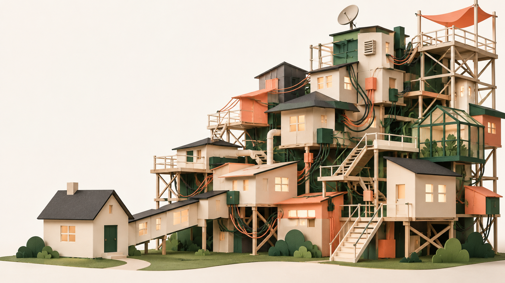
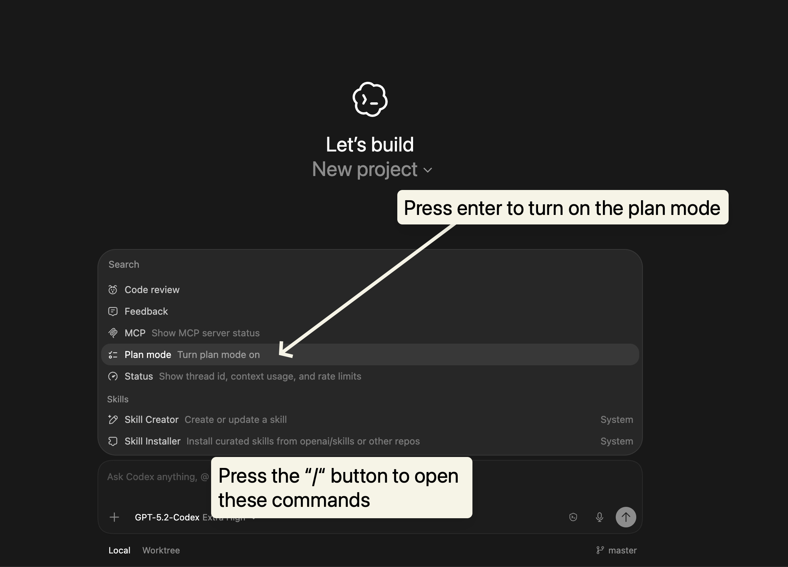
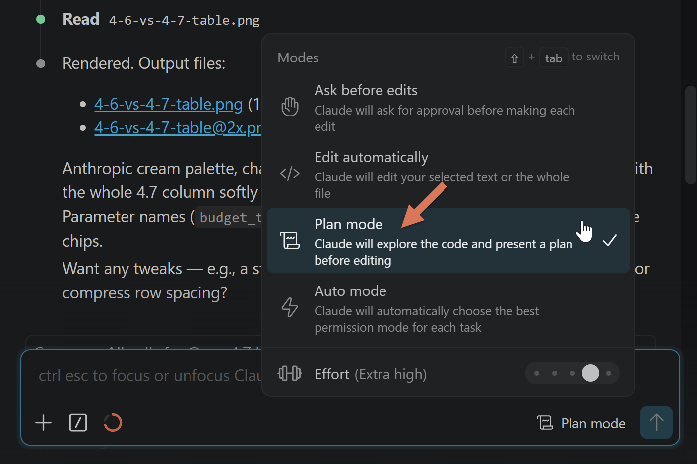
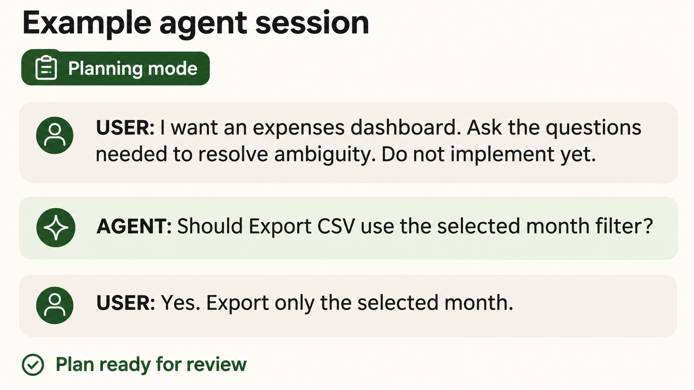
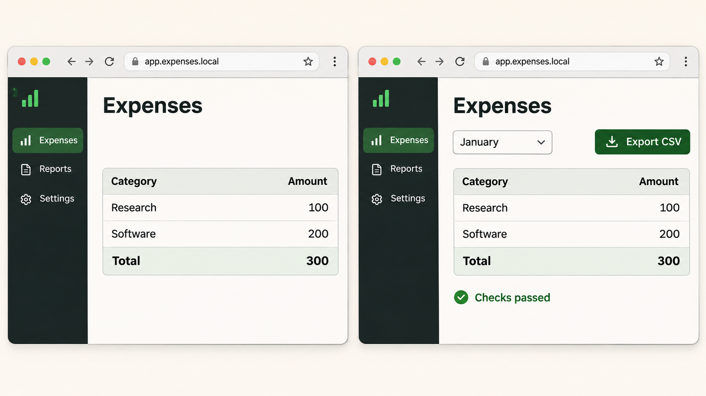
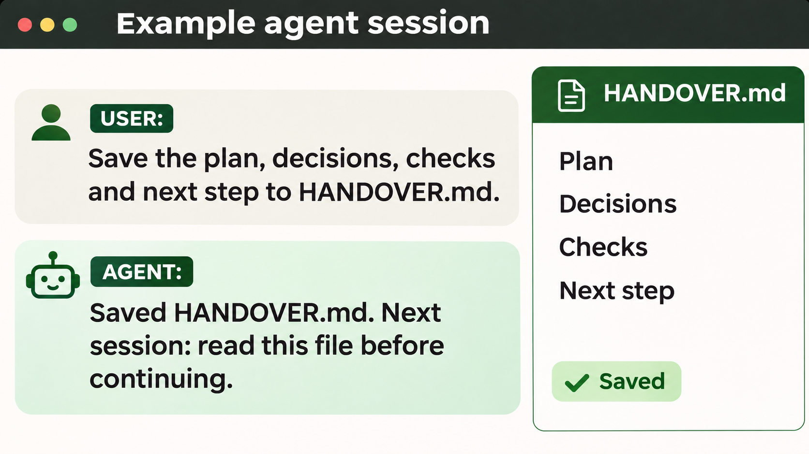

1attempt→3–5attempts

Beyond
Vibe Coding
AI prototypes that last
The next change got harder.
Less to maintain after the next feature.
Three habits for the next feature.
01
Keep it small.
Ponytail
02
Plan and verify.
Planning Mode + checks
03
Keep progress.
Context + saved artifacts
Add Ponytail to your agent.
“Install Ponytail
for this project.”
DietrichGebert/ponytail
Plugin installed
Ponytail · full
Ponytail · full
What Ponytail’s author reports.
≈53%less code
≈45%fewer output tokens
≈41%less time
≈26%lower API cost
What my small pilot found.
≈27% less growth
≈7% fewer tokens
Use Planning Mode.
OpenAI · Codex best practices
Anthropic · Common workflows
Clarify the task before changing the product.
Turn it on before prompting.

Type /plan.

Choose Plan mode in the mode menu.
Now ask it to resolve ambiguity.

Give the agent a way to check.
Anthropic · Best practices
If the agent cannot check,
you have to.
“Build me an expenses dashboard.”

Looks finished.
Until you try to use it.
Your review becomes the test.
“Where is Export CSV?”
“Add a month filter.”
“Export only that month.”
Review · correct · repeatDefine the result and the check.
January filter
Export the selected rows
100 + 200 = 300
“Check this in the browser
and verify the calculation.”
and verify the calculation.”
Move the checks into the task.
Vague requestRequirements + checks
Review · correct · repeatSpecify · build · verify
Your conversation has a limit.
Context used95%
RequirementsDecisionsCodeTool outputs
Compaction keeps a summary.
Context used20%
Export only the selected month
A detail can be lost.
“Should I export every row?”
Save the work. Keep the goal.

/goal keeps the finish line in view. Files keep the details.
Make repeated instructions reusable.
“Keep this rule
for the project.”
AGENTS.md / CLAUDE.mdStanding project guidance
“Make this procedure
a skill.”
SKILL.mdLoad for the relevant work
Use the right model for each step.
01
→Plan
Stronger model
02
→Implement
Try a cheaper model
03
Review
Escalate when needed
≈90%
mean bulk-read token savings
Spotify Portal case · not total development cost
A workflow, not one magic prompt.
- 1Add Ponytail
- 2Enable Planning Mode
- 3Agree on checks
- 4Build and verify
- 5Save a handover
Beyond Vibe CodingQuestions welcome
Make the next change easier.
- Define what “done” looks like.
- Ask for a small, complete change.
- Keep checks and a handover.
Evidence and materials
github.com/DemidovArtem/ai-coding-benchmarks
Appendix A · own measurementFrozen six-step ripgrep pilot
Small sample. Important limitations.
| Mean [observed min–max] | Baseline · n = 2 | Ponytail · n = 2 |
|---|---|---|
| Net production LOC | 413.5 [322–505] | 301 [286–316] |
| Output tokens | 67,311.5 [65,442–69,181] | 62,766 [59,521–66,011] |
| Production churn | 578.5 [522–635] | 449 [420–478] |
| Sonar cognitive complexity delta | 142 [125–159] | 150.5 [149–152] |
No consistent quality winner. Step 6: all seven trajectories unresolved, 7/8 new tests.
Step 5 grading invalid. One Ponytail continuation has a disclosed reasoning-context amendment.
Steps are dependent; ranges are not confidence intervals. Fixed model; no model comparison.
Appendix B · external benchmarkArtificial Analysis · checked 22 November 2026
Compare configurations, not brand names.
| Agent + model + setting | Index | Mean API cost / task |
|---|
A cost–performance tradeoff in this benchmark.
Check the tradeoff on your own tasks.
Index v2.1: three equally weighted benchmarks.
Cost is pay-per-token API cost, including applicable cache pricing.
Not subscription price, quota use, human review time or total operating cost.